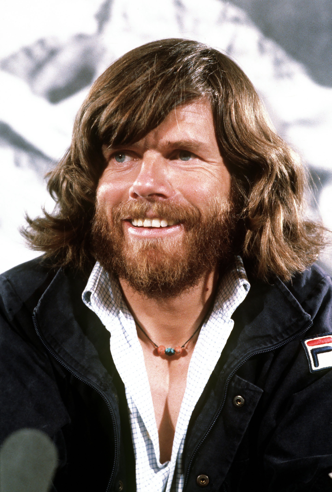
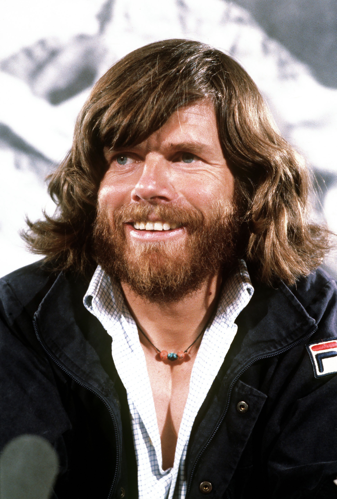

indice
- home
- gli ottomila
- biografia
|
Reinhold Messner (Bressanone, 17 settembre 1944) è un alpinista, esploratore, scrittore e politico italiano.
Inizialmente salito alla ribalta nel mondo dell'alpinismo per aver riportato in auge l'arrampicata libera in un periodo nel quale era preponderante la progressione artificiale, rendendosi protagonista nel 1968 del primo VIII grado in libera (seguendo la "linea logica") al Pilastro di Mezzo del Sass dla Crusc, il suo nome, legato a innumerevoli arrampicate e esplorazioni, è per lo più noto al grande pubblico per essere stato il primo alpinista al mondo ad aver scalato tutte le quattordici cime del pianeta che superano gli 8 000 metri sul livello del mare, spesso da versanti o in condizioni di eccezionale difficoltà (una di queste ha ispirato il film Nanga Parbat). Le sue innovazioni nell'arrampicata libera prima e nell'alpinismo di alta quota poi lo fanno figurare ai vertici dell'alpinismo internazionale a cavallo degli anni sessanta e settanta.
Considerato uno dei sostenitori del cosiddetto "stile alpino" nelle grandi montagne himalayane, per lo più oggetto allora di spedizioni con molti scalatori e caratterizzate da grande dispendio di risorse (himalayismo), fondamentali a tal proposito furono due imprese: nel 1978 è il primo uomo a scalare l'Everest senza l'ausilio di ossigeno supplementare insieme a Peter Habeler, mentre nel 1980 raggiunge la medesima vetta in solitaria. È stato quindi un grande himalaista, capace di darsi sempre nuovi obiettivi e di comunicarli con grande efficacia anche ad un pubblico di non addetti ai lavori. Tra le altre imprese, le traversate dell'Antartide e della Groenlandia senza il supporto di mezzi a motore né cani da slitta e la traversata del Deserto del Gobi.
Socio onorario e medaglia d'oro del Club Alpino Italiano, è anche autore di molti libri in cui narra le sue imprese e affronta tematiche inerenti alla cultura della montagna, mentre dal 1999 al 2004 è stato Membro del Parlamento europeo eletto come indipendente nella lista dei Verdi italiani, fatti che hanno contribuito alla sua notorietà. Agricoltore, si dedica alla gestione del Messner Mountain Museum, un complesso museale dedicato a tutti gli aspetti della montagna, dislocato tra Castel Firmiano a Bolzano, Solda, Castel Juval (dove Messner abita dal 1983), Monte Rite, Castello di Brunico e Plan de Corones.
|
 

|